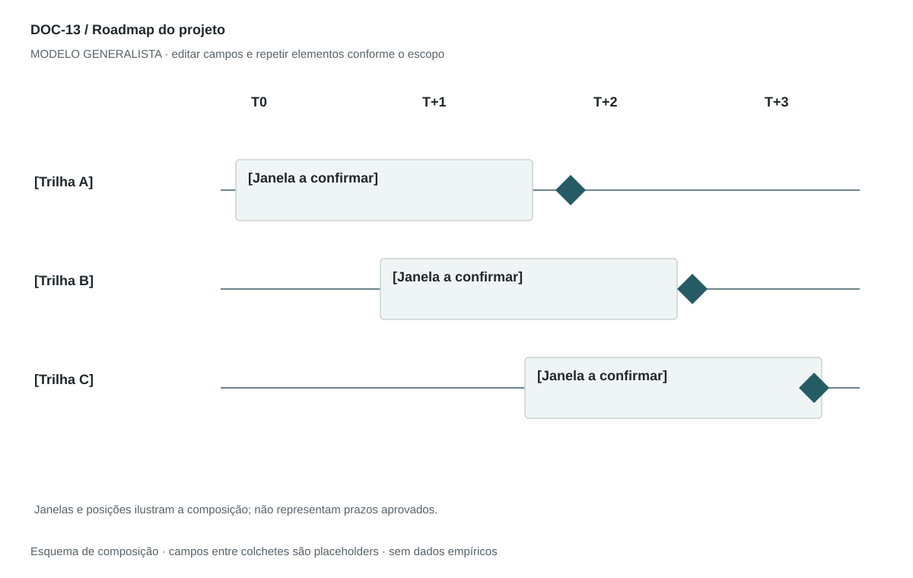

DOC-13 / Biblioteca documental generalista
Roadmap do projeto
Comunicar sequência, marcos, dependências e incertezas do plano de implantação.
Modelo de investigação. Não representa uma análise concluída. Campos vazios devem permanecer identificados; não inventar dados para completar figuras.
Estrutura editorial
Uma prancha paisagem + uma página de premissas. Usar faixas temporais ou datas consistentes; preservar sobreposição e dependências.
Visual previsto

Eixo horizontal de tempo, trilhas de trabalho no vertical, barras de duração e losangos para marcos. Sem datas, mostrar janelas T0/T+1 com a legenda Planejamento a definir.
Imagens: Linha do tempo vetorial. Não usar fotos. Para serviço contínuo, separar implantação de rotina; não forçar um encerramento de operação.
Dicionário de dados
| Campo | Tipo | Dado necessário |
|---|
| marco_id | referencia | Identificador do marco |
| trilha | texto | Frente de entrega |
| entrega_id | referencia | Componente ou pacote correspondente |
| inicio | data | Data ISO planejada ou null enquanto indefinida |
| fim | data | Data ISO planejada ou null enquanto indefinida |
| janela_relativa | texto | Alternativa a datas: T0, T+1 etc., sem tratar como calendário real |
| dependencia_id | referencia | Marco ou pacote precedente |
| criterio_marco | texto | Evidência de conclusão |
| confianca_prazo | enum | baixa, media, alta ou desconhecida |
Todos os registros precisam de classificação, fonte, localização, datas, confiança e limitação. Números também precisam de unidade, moeda quando aplicável e período.
Modelo preenchível
Os quadros amarelos podem ser editados nesta página para impressão. Edições não são gravadas automaticamente: use o Markdown/JSON para manter uma versão ou imprima em PDF após editar.
[Negócio] · [Versão] · [Data-base] · [Autor] · [Audiência] · [Território]
Pergunta decisória: [A preencher]
Escopo: [A preencher]
1. Objetivo e base do plano
Data-base, horizonte, versão, capacidade e restrições.
[Análise + evidência + implicação + lacuna]
2. Trilhas de trabalho
Organize frentes por resultado e responsáveis, evitando lista de cargos.
[Análise + evidência + implicação + lacuna]
3. Marcos e entregas
Defina evidência necessária para cada marco e sua dependência.
[Análise + evidência + implicação + lacuna]
4. Cronograma
Início/fim planejados ou janelas; explicite precisão e flexibilidade.
[Análise + evidência + implicação + lacuna]
5. Gates e revisão
Condições para avançar, replanejar ou interromper; cadência de atualização.
[Análise + evidência + implicação + lacuna]
Decisão e próximo passo
[Decisão e justificativa]
[Alternativa considerada]
[Condição de reversão]
[Ação, responsável, prazo e critério]
Fontes e limites
[Fonte + localização + datas + o que sustenta + limitações]
Critérios de revisão
- Datas e semanas não entram em conflito.
- Dependências têm IDs existentes e não formam ciclos.
- Prazo não é compromisso aprovado quando ainda é hipótese.
Estudo do arquivo original
DOC-13-fonte.pdf — Uma página retrato com fases, meses e semanas em bullets; quadro High-Level inserido como imagem ao final. O plano alterna referência mensal e semanal sem explicitar conversão, o que pede reconciliação antes de reutilizar. Monitoramento aparece como contínuo.
Observação do original e adaptação recomendada são camadas distintas. Nomes, preços, localidades, contatos e conclusões do caso-fonte não devem preencher a nova análise.